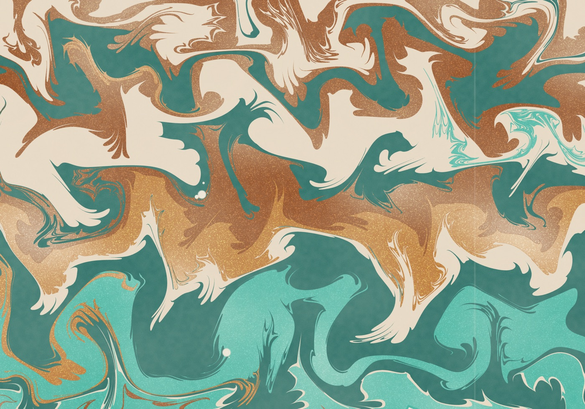
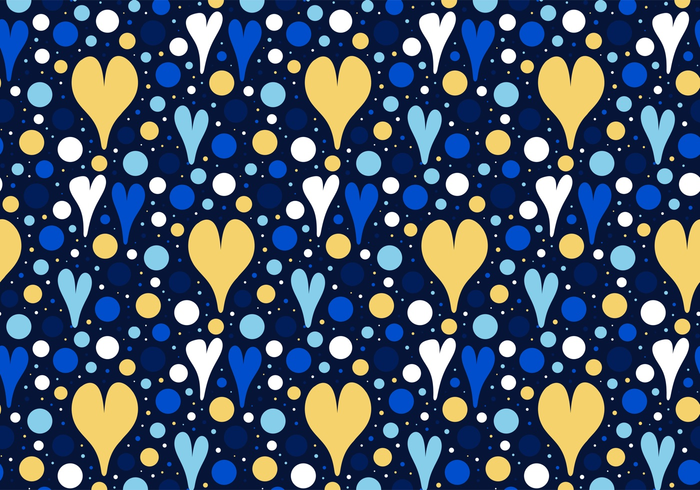
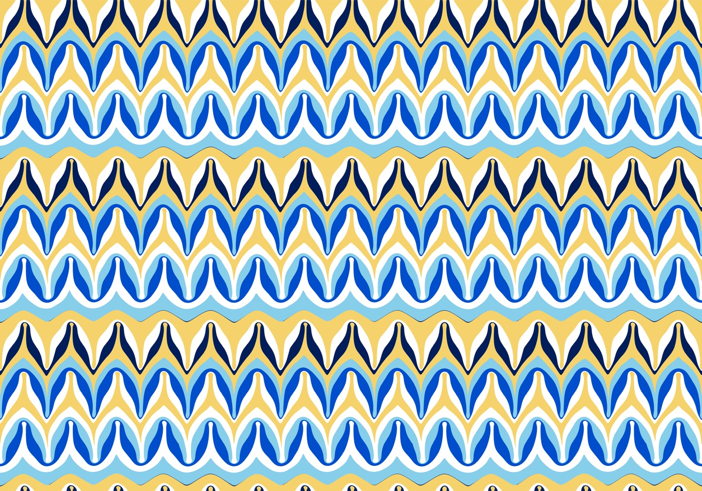
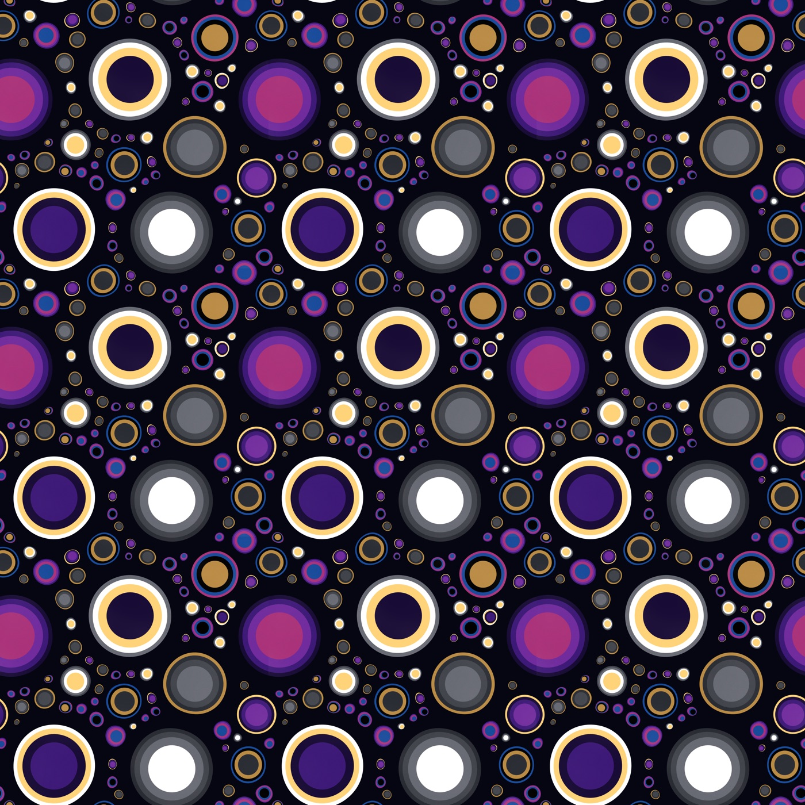
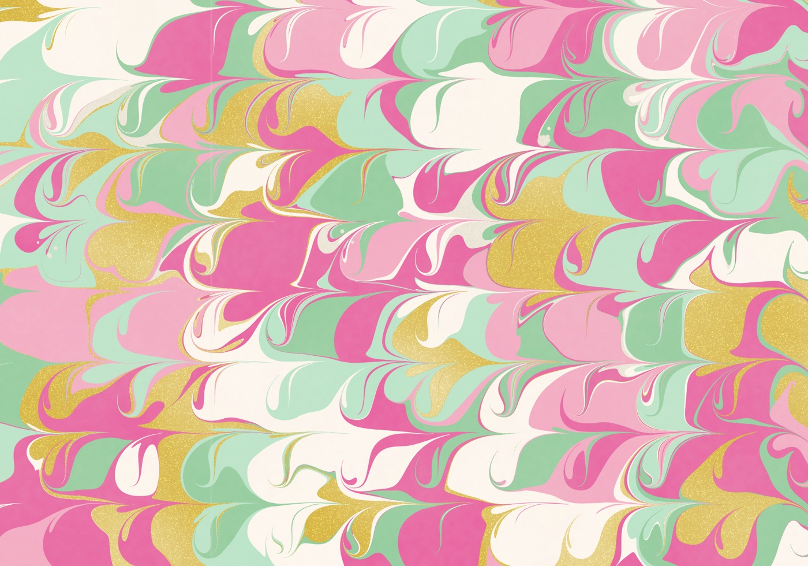

How Marbler works
Marbling floats ink on a thick bath, combs it into patterns, then lifts the pattern off with paper. Marbler does all of that in your browser. This page explains what's going on underneath, in one place.

The big idea
The maths of marbling comes from Aubrey Jaffer's work. Real raking is close to reversible: drag a tine through the ink, drag it back along the same line, and the pattern mostly returns. So each action can be written as a smooth, continuous formula that says where every point of the surface moves to. Ink never tears, and the overall order of the colours never changes.
Most of Marbler's simulators follow from that. Each patch of ink is a closed loop of points. Every action moves those points by its formula, and new points get added wherever a loop stretches too far to look smooth. That's why edges stay crisp at any zoom, and why long sessions get slow: a thoroughly raked tank can hold millions of points.
Grid ink is the exception. It stores colour on a grid of cells and simulates the water itself, which suits soft blends and long flows.
The tank and the clock
The tank is measured in millimetres internally, 1000 × 700 by default. Everything happens over time: each tick, every active drop and tool moves the ink a little, so a rake can pass through a drop that's still growing. Drops and tools wait or overlap depending on your settings, and Tools wait for ink holds a rake back until the drops have finished.
A drop's area grows as final area × (1 − e^(−dispersion × t)): fast at first, then easing off. Viscosity sets how thick the bath is, and Hard edges keeps ink inside the rectangle, where it flattens against the walls. With it off, ink pushed past the edge carries on out of view.
Simulators
A simulator is a set of rules for how ink behaves. They all take the same tools and scripts, though the same script can look quite different on each. New ones get added rather than replacing old ones, so you can compare them.
Two tank settings apply in every simulator. Keep cells separate (on by default) leaves a hairline of bare bath where two drops spread into each other, even of one colour, as on real stone and vein sheets; a drop that lands inside one of its own colour still joins it. Each simulator draws it its own way, and Grid ink doesn't yet. Cut hairline ink (Advanced) trims ribbons stretched thinner than half a millimetre while tools move ink, which keeps long sessions fast; squeezed ink is never cut, and turning it off keeps every thread. Tools only decide where and how much ink lands; how it then spreads, joins or separates is always the simulator's.
The maths of each motion
These are the formulas behind the outline simulators. Here p is a point on an outline, and c is the centre of the action.
- Drop
- A point at distance
rfrom the centre moves to distance√(r² + s), wheresis the drop's area over π. Everything outside gets pushed out by exactly the area the drop adds, so area is preserved. - Stylus and rake
- Each tine pulls nearby ink along its direction of travel, and the pull fades exponentially with distance, as
e^(−d / L), whereLis the reach. A rake is a row of tines. Each tine's motion also carries a matching sideways part, so the flow doesn't squash the ink. - Arches (comb shear)
- For fine straight combs, such as a nonpareil's, Full rake can use Lu et al.'s comb shear (2012) instead of a row of tines. Each point moves along the comb by
α λ / (d + λ), wheredis its distance to the nearest tooth,αis the arch andλthe sharpness, so every line between two teeth bends into a pointed arch. Turn it on with Arches in Full rake's Advanced settings (about 1.5 times the gap between teeth); it is off by default. Weaves and tine widths still use tines. - Tine width
- A real tine has thickness. The width option makes ink bulge around the tine and close up behind it, using the flow around a moving cylinder.
- Stir
- Circular tines. A point at distance
ρfrom the centre rotates by an angle that falls off ase^(−|ρ − R| / (L R))from each ring of radiusR. - Vortex
- A Lamb-Oseen swirl, which spins up around a point: angular speed
Γ / r² × (1 − e^(−r² / 4νt)). - Jiggle and wriggle
- Sine waves. Jiggle moves the whole tank across a travelling wave, and wriggle twists rings back and forth around a centre.
- Air
- A smooth random flow, built as the curl of noise. A curl can't compress anything, so ink stretches and swirls without changing its area. The same seed repeats the same breath.
- Direction
- Angle 0 points right and 90 points up. Positive
degreesandcirculationturn counter-clockwise, negative clockwise, and instira negative radius reverses that ring.
Tools
Everything in the toolbar, and what it's for. Each control in the app also has its own (i) with more detail.
Patterns to try




Repeating patterns
Repeating joins the tank's edges so it behaves like the surface of a doughnut: ink leaving one side comes back at the other, and exports tile seamlessly. See it repeat shows the copies side by side.
Outlines are never cut at the seam. They stay whole, every motion repeats across the join, and they're drawn wherever they show. That has a real physical cost: a doughnut has only so much surface. In Classic, each drop's growth is balanced by a slight contraction of everything else. In Film and Wake, drops spread over water instead, so a tank with no water left stops them growing.
Offset shifts the repeat by half a tile, each row for a brick layout or each column for half-drop. An angled rake then has copies of its tines coming in from other places, so the whole bath can move a little before the tines get to it. That's the geometry at work, not a bug. Switching layout with ink on the tank moves copies relative to each other, so raked patterns stop lining up at the seams.
Classic, Film, Wake, Wake (fast) and Grid ink repeat, and Grid ink doesn't do offsets yet. Spreading, Thin film and Cells don't repeat.
Prints and exports
- PNG
- Exactly what the tank shows.
- SVG
- Scalable shapes in flat colour, without shimmer. Grid ink exports an embedded picture.
- A 3000 pixel picture of the tank on paper. It works out how thick each region of ink is and tints the paper accordingly, thicker being deeper (Beer-Lambert). Thin ink looks paler, Rims and texture and Soft edges are artistic touches, not simulated, and each one can be turned off.
- Pull paper
- Lays a sheet across the tank, shows the print and keeps it in the browser. Options set the paper tint, how imperfect the pull is, and whether the tank clears afterwards. Prints read the same way round as the tank unless Mirror like a real print is on.
With no base colour set, an empty tank shows a soft grid that's never exported, so exports have transparent backgrounds.
Saving your work
Everything you save stays in your browser, on your computer. Marbler has no accounts, so clearing your browser's data for this site deletes it.
- Saved states
- A snapshot of the tank that you can return to.
- My scripts
- Scripts kept by name. Choosing one opens it with the simulator it was saved on, and it doesn't run until you press Run.
- My palettes
- Your own inks and base colour under a name. Scripts can use them with
palette('name'). - Undo
- Keeps full copies up to 500 MB, and older steps replay when undone.
- Starting afresh
- Your tool and tank settings are remembered too. File › Reset tools to defaults puts the tools back as they ship and keeps the ink in the tank; File › Reset tank settings does the same for the simulator, size, viscosity, Repeating, detail and paper, then reloads. Clear everything deletes everything Marbler keeps in this browser.
Detail and speed
Point limit caps how many points outlines may use, from 50,000 to 20 million. The limit holds: when ink needs more, edges get coarser so the total fits. Standard (400,000) is tuned for live play.
Low framerate shows a snapshot about every 2 seconds and spends the rest of the time simulating. It also switches on by itself when things get slow, until the tank settles. The simulation still runs on the page's main thread, so clicks can wait for the current tick. Wake (fast) draws in a background worker, which helps busy tanks keep moving.
If a simulator can't keep up (for 20 seconds the ink moves less than a tenth of a second's worth each second), Marbler says it is struggling, with how many shapes there are. Pause or undo, or switch to Wake (fast). Cells (beta) is the slowest with many small drops.
Wake also cuts off ribbons of ink thinner than 0.5 mm, which can split one drop's outline into several, so the counts on the status line can rise as you work.
Scripts
Every pattern can be written as a short script, and Copy session to script turns what you just did by hand into one. Scripts are real JavaScript that runs in the page, so only run ones you trust.
Run normally starts from an empty tank. Untick Clear tank first to play a script on top of the ink that's already there. It starts straight away, its at times count from when it starts, and one Undo takes it all back. Add settle() as its first line to wait for what's already moving.
const { bath: water, inks } = palette('Lapis & Gilt');
bath({ color: water });
tile({ on: true });
fillDots({ count: 80, colors: inks, gap: 0.6 });
settle();
hearts({ angle: 270 });- Positions
- Scripts work on a 0 to 100 page, the way CSS percentages do.
xis % of the width from the left andyis % of the height from the top, so50, 50is the centre. - Sizes
- % of the width, so circles stay round on any tank. A
ystep for equal spacing is thexstep divided byASPECT. - Amounts
quantityis the amount of ink, as a share of the tank's area at plain size.- Time
- Drops start at the current cursor and don't move it, so consecutive drops grow together. Tools move the cursor by their duration,
waitmoves it further, andatsets an explicit start.settle()makes everything after it wait until all ink and tools have finished. - Colours
- Any CSS colour, including translucent ones.
shimmerfrom 0 to 1 makes ink metallic. - Sliders
- Size-like sidebar sliders run 0 to 100 across a useful range, so their numbers aren't script values.
Command reference
This list is generated from the same catalogue that the app and its tests use, so it can't fall out of date.
Values
Palettes
The assistant
The assistant turns a description into a script. It needs an OpenAI API key and runs only on your own computer, so the hosted demo leaves it out. A key in a web page wouldn't be safe, because scripts run in that same page and could read it.
- Download the code. There's nothing to install beyond Node.
- Put
OPENAI_API_KEY=...in a file called.env.local, in the folder above the code. - Run
node server.mjsand openhttp://127.0.0.1:8000.
The key stays in that local server and never reaches the browser. It's worth using a separate key with a monthly spend limit. Don't host this server publicly: it has no login or rate limit, so strangers could spend your key.
Known limits
- Not calibrated: no simulator has been measured against real marbling yet. They look right, but they aren't a physical prediction.
- Grid ink: no offset repeat, eraser, freeze or Hearts yet.
- Hard edges:
shiftandturnsmear ink along the walls. Ink dragged hard into a wall thins to a sliver and loses most of its area. - Repeating tanks: a tine's pull reaches at most a fourteenth of the tile, a jiggle takes a whole number of waves so its period and angle shift slightly, wriggle's in-and-out movement is left out, and
turnisn't available. - Film seams: film edges stop closing at about 5 mm, so each outline is also painted under the ink to hide the gap. That's a drawing trick, not physics, and translucent inks skip it, so their seams can show.
- Spreading: neighbouring drops stop about 8 mm apart, and always stay separate outlines.
- Colour: a drop's ink has one flat colour, and
quantitysets area only, not thickness.
Credits
Marbler stands on other people's work, especially:
- pst-marble by Aubrey Jaffer (LPPL 1.3c), and his marbling pages: the formulas Marbler began with. Part of Marbler's code is modified from this package. Its authors don't support Marbler.
- BiMocq² by Qu et al. (2019, MIT): the method behind Grid ink.
- Digital Marbling by Amanda Ghassaei: the look Wake aims for, and rakes as forces on the flow.
- florilegium by Kevin Raymond, and Wong, Zongker & Salesin (1998): filling the largest hole first.
- Bridson et al. (2007), for curl noise.
The source code is on GitHub. The repository's BIBLIOGRAPHY.md lists every source, and NOTICE has the licence details. Marbler is by Ilse Funkhouser, written with Claude.